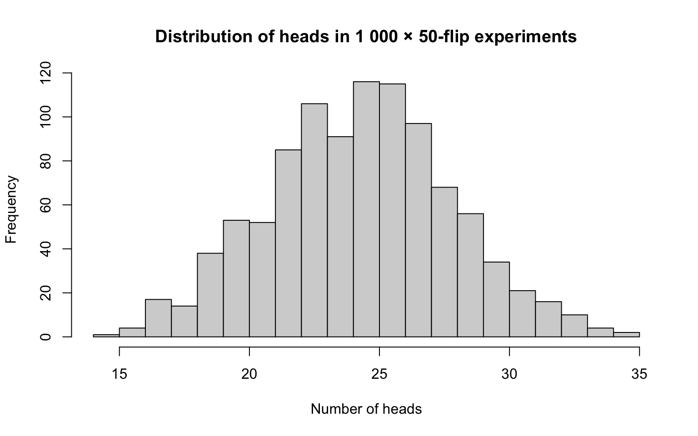
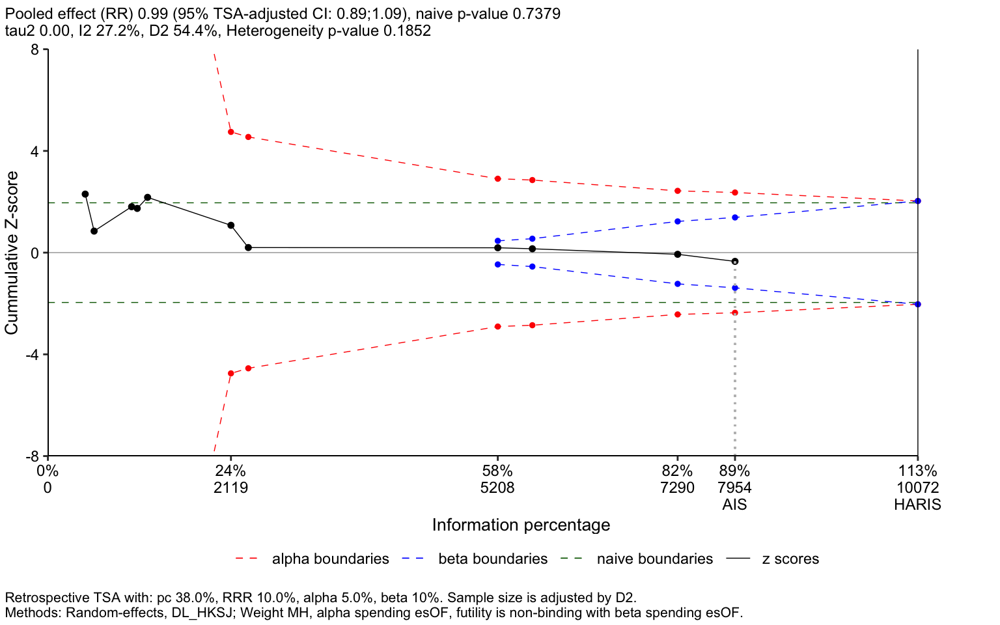

Attaching package: 'dplyr'The following objects are masked from 'package:stats':
filter, lagThe following objects are masked from 'package:base':
intersect, setdiff, setequal, unionIn the past, researchers had to manually code their own statistical analyses, which was tedious and error-prone. Today, statistical software simplifies this process dramatically. Researchers shift their focus from the technical complexities of computation to understanding statistical logic and applying analyses correctly.
This section offers guidance on selecting appropriate statistical programming language, walks through the set-up process, and introduces the basics of conducting statistical analyses using modern tools.
R, Python, and Stata are the 3 most commonly used languages. There are a few other options (SPSS, SAS, Julia, etc.), but they aren’t covered here.
| R | Python | Stata | |
| Cost | Free | Free | Requires License |
| IDE | RStudio/Posit | Many, Visual Code is good | Built in editor |
| Strengths | Best libraries for epidemiology, trial statistics. | Best libraries for text processing, machine learning, AI integration | Simple syntax; powerful quasi-experimental/meta-analysis packages. Used by U of U MSCI. |
| Weakness | Clunky syntax; many ‘dialects’ | Overkill for many, complex development environment | Clunkiest machine learning, explainable programing, cost. |
| Explainable programmingWriting analytic code in a clear, structured, and understandable way so that readers (including reviewers, collaborators, and future researchers) can easily follow and replicate the steps of your analysis. In quantitative disciplines such as mathematics and computer science, providing such code is already standard practice. Medicine is beginning to adopt this approach, recognizing its importance for transparency and reproducibility. | Quarto | Jupyter, Quarto | Not native (though can use Jupyter) |
| term | definition |
|---|---|
| Explainable programming | Writing analytic code in a clear, structured, and understandable way so that readers (including reviewers, collaborators, and future researchers) can easily follow and replicate the steps of your analysis. In quantitative disciplines such as mathematics and computer science, providing such code is already standard practice. Medicine is beginning to adopt this approach, recognizing its importance for transparency and reproducibility. |
Choose the tab for the language(s) you plan to use:
| 1: | Install R Language | https://cran.r-project.org/ | This installs the base programming language |
| 2: | Install RStudio | https://posit.co/downloads/ | RStudio is an IDEIntegrated Development Environment, a program that allows for writing, running, and debugging code within a single program. (integrated development environment) that allows you to write, execute, and debug code from within a single program. |
| 3: | Install Quarto (formerly Markdown) | https://quarto.org/docs/get-started/ | Facilitates sharing and explaining your code. |
|
1: |
Install Python Language and dependencies |
This (mini-forge) installs the base Python programming language, the things it depends on, and many useful packages |
|
|
2: |
Create an environment |
Execute the following commands in a terminal:
|
This sets up an environment (controls the versions and packages that are used). |
|
3: |
Install Visual Code |
Visual Code is an IDE (integrated development environment) that allows you to write, execute, and debug code from within a single program. |
*Note: there are many IDEIntegrated Development Environment, a program that allows for writing, running, and debugging code within a single program.. Visual Code is a classic one with a lot of functionality, though there are AI enabled ones (e.g. Cursor) that may be more helpful depending on how much programming you plan to do and whether you want to bother with the added complexity (discussed more in Section 2.6).
You can also use Quarto for explainable programming in Python - but Jupyter is a more common workflow so we focus on that.
| 1: | Get a product key | if U of U Trainee, contact me | This verifies you or your institutions’ purchase |
| 2: | Install STATA | https://www.stata.com/install-guide/ | Includes language and IDEIntegrated Development Environment, a program that allows for writing, running, and debugging code within a single program. (integrated development environment) |
For common statistical analyses in any of these languages, specialized packages already exist that handle these tasks efficiently. Whenever you find yourself manually calculating or coding a statistical procedure, consider that someone likely has already written reliable, tested code that will perform the analysis faster and more accurately. You’ll want to use these packages whenever possible.
First, a few terms: functionA reusable piece of code that performs a specific task. Examples include calculating the mean of a dataset or running logistic regression., argumentsInputs provided to a function so it can perform its task. For instance, a function calculating a mean needs a dataset, while logistic regression requires data, the outcome variable, and predictor variables., packageA curated collection of functions designed to accomplish related tasks. Programming languages come pre-installed with basic packages, but you’ll often download additional packages to access specialized functions. Each language provides straightforward ways to locate and install new packages.
| term | definition |
|---|---|
| arguments | Inputs provided to a function so it can perform its task. For instance, a function calculating a mean needs a dataset, while logistic regression requires data, the outcome variable, and predictor variables. |
| function | A reusable piece of code that performs a specific task. Examples include calculating the mean of a dataset or running logistic regression. |
| package | A curated collection of functions designed to accomplish related tasks. Programming languages come pre-installed with basic packages, but you’ll often download additional packages to access specialized functions. Each language provides straightforward ways to locate and install new packages. |
| Where to find packages? | https://cran.r-project.org/web/views/ |
| Command to install packages |
install.packages(`package_name`)
|
| How to access documentation file? |
?package_name or ?command_name
|
|
Where to find packages? |
|
|
Command to install packages |
|
|
How to access documentation file? |
The project page on https://pypi.org/ or https://github.com/ |
| Where to find packages? | findit package_name |
| Command to install packages | ssc install package_name |
| How to access documentation file? | help package_name |
As mentioned before, explainable programming is an important idea for ensuring that the statistical analyses you do can be double checked, replicated, and improved.
The idea is that the steps that individually
basic usage - notebooks - reproducible research pipelines.
This example is chosen to demonstrate how to make a reproducible notebook, download a package, and execute the relevant commands.
Example - simple meta-analysis in all 3 languages? (all default in STATA?)
install the needed packages (meta, excel spreadsheet import)
display the data
meta-analyze
generate a figure.
Relevant packages: https://cran.r-project.org/web/views/MetaAnalysis.html
The ‘meta’ package looks good. Try using `install.packages(‘meta’)` to install it, then you can you can access the documentation using `?meta`
Let’s try an example… I extracted data on all of the trials comparing high O2 to low O2 targets and uploaded to github.
Attaching package: 'dplyr'The following objects are masked from 'package:stats':
filter, lagThe following objects are masked from 'package:base':
intersect, setdiff, setequal, union| name | author | year | doi | num_randomized | num_patients | num_high_o2 | high_o2_died | high_o2_alive | num_low_o2 | low_o2_died | low_o2_alive | target | outcome | population |
|---|---|---|---|---|---|---|---|---|---|---|---|---|---|---|
| Oxygen-ICU | Girardis | 2016 | 10.1001/jama.2016.11993 | 460 | 432 | 216 | 74.0 | 142.0 | 216 | 52.000 | 164.000 | either | in-hosp | All |
| CLOSE | Panwar | 2016 | 10.1164/rccm.201505-1019OC | 104 | 103 | 51 | 19.0 | 32.0 | 52 | 21.000 | 31.000 | spo2 | 90d | All |
| HYPER2S | Asfar | 2017 | 10.1016/S2213-2600(17)30046-2 | 442 | 434 | 217 | 104.0 | 113.0 | 217 | 90.000 | 127.000 | sao2 vs fio2 | 90d | Septic Shock |
| Lang2018 | Lang | 2018 | 10.1111/aas.13093 | 65 | 65 | 38 | 9.0 | 29.0 | 27 | 8.000 | 19.000 | fio2 | 6m | TBI |
| COMACARE | Jakkula | 2018 | 10.1007/s00134-018-5453-9 | 123 | 120 | 59 | 20.0 | 39.0 | 61 | 18.000 | 43.000 | pao2 | 30d | OHCA |
| ICU-ROX | Mackle | 2020 | 10.1056/NEJMoa1903297 | 1000 | 965 | 484 | 157.3 | 326.7 | 481 | 166.907 | 314.093 | spo2 | 90d | unknown |
Now, let’s meta-analyze it:
Loading required package: metadatLoading 'meta' package (version 8.1-0).
Type 'help(meta)' for a brief overview.#metabin takes events, total (rather than events, nonevents)
m_ex1 <- meta::metabin(low_o2_died, num_low_o2, high_o2_died, num_high_o2, data = data_sheet, studlab = paste(name, author, year), sm = "OR")
meta::forest(m_ex1, comb.random = FALSE, lab.c = "High Oxygen", lab.e = "Low Oxygen", label.left = "Favors Low O2", label.right = "Favors High O2")Warning: Use argument 'label.e' instead of 'lab.e' (deprecated).Warning: Use argument 'label.c' instead of 'lab.c' (deprecated).
And if you want to get really cutting edge, you can do a trial sequential analysis (TSA) on it:
── Attaching core tidyverse packages ──────────────────────── tidyverse 2.0.0 ──
✔ forcats 1.0.0 ✔ readr 2.1.5
✔ ggplot2 3.5.2 ✔ stringr 1.5.1
✔ lubridate 1.9.4 ✔ tibble 3.2.1
✔ purrr 1.0.4 ✔ tidyr 1.3.1
── Conflicts ────────────────────────────────────────── tidyverse_conflicts() ──
✖ dplyr::filter() masks stats::filter()
✖ dplyr::lag() masks stats::lag()
ℹ Use the conflicted package (<http://conflicted.r-lib.org/>) to force all conflicts to become errorsWarning: Unknown or uninitialised column: `order`.
Unknown or uninitialised column: `order`.Warning in RTSA(type = "analysis", data = rtsa_df, outcome = "RR", mc = 0.9, :
NB. The required information size adjusted by Diversity (D^2). This might cause
an under-powered analysis. Consider changing the argument `random_adj` from
`D2` (default) to `tau2`.$study
[1] "character"
$author
[1] "character"
$year
[1] "numeric"
$doi
[1] "character"
$num_randomized
[1] "numeric"
$num_patients
[1] "numeric"
$nI
[1] "numeric"
$eI
[1] "numeric"
$high_o2_alive
[1] "numeric"
$nC
[1] "numeric"
$eC
[1] "numeric"
$low_o2_alive
[1] "numeric"
$target
[1] "character"
$outcome
[1] "character"
$population
[1] "character"
$study
integer(0)
$author
integer(0)
$year
integer(0)
$doi
integer(0)
$num_randomized
integer(0)
$num_patients
integer(0)
$nI
integer(0)
$eI
integer(0)
$high_o2_alive
integer(0)
$nC
integer(0)
$eC
integer(0)
$low_o2_alive
integer(0)
$target
integer(0)
$outcome
integer(0)
$population
integer(0)Warning in geom_segment(aes(x = 0, xend = max(sma_timing, na.rm = T), y = y_val1, : All aesthetics have length 1, but the data has 13 rows.
ℹ Please consider using `annotate()` or provide this layer with data containing
a single row.Warning in geom_segment(aes(x = 0, xend = 0, y = y_val1, yend = y_val2)): All aesthetics have length 1, but the data has 13 rows.
ℹ Please consider using `annotate()` or provide this layer with data containing
a single row.
Meaning, we’ve passed futility (at 90% power) for a 10% relative risk reduction a few trials ago. Cool.
‘Vibe Coding’ and related concepts. - GPT usage.
word of caution - do not put Patient Health Information into LLM Chatbots. most the services offer to be your data-analyst… which does work, but is not appropriate for research data. This includes “publically avalilable” databases like MIMIC
Large Language Models: Options:
Copilot:
Prompt Engineering:
How I used GPT4 creating this workbook:

Next steps:
How should you version control, store, and share statistical analyses? Github is an excellent resource that is relatively straightforward to use, and I strongly recommend it.